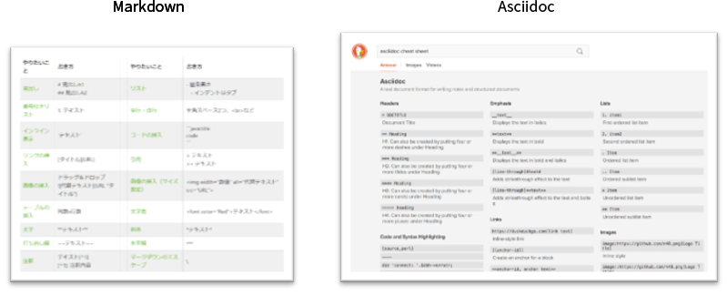

マニュアルの作成体制は会社によって異なります。
エンジニアが業務の一環としてマニュアルを作成する
エンジニアから情報を得て、ユーザーサポート部が作成する
エンジニアから情報を得て、マニュアル専門部署が作成を行う
いずれの場合も、部署間・部署内でのコミュニケーションが重要になります。
製品が発売、納品されるまでは、幾度の仕様変更が発生します。また、リリース後も、バージョンアップなどによるマニュアルの改定が行われおり、マニュアルデータの版数・変更履歴の負荷が高いものでした。
「エンジニアからの情報のとりまとめが大変」 「マニュアルやドキュメントのデータ共有が煩雑で、データの管理に手間がかかる。」 「修正の履歴管理が煩雑になりがち」
GitHubを活用することで、ファイルの世代管理や修正履歴の管理が容易です。 いつ、誰が、どのような修正をしたかなど細かい履歴も確認することが可能になります。
GitHubのプルリクエスト機能を使うことで、レビュー依頼やフィードバック、対象ドキュメントを一括で連絡できるため、コミュニケーションを円滑に行えます。 GitHubのリポジトリ上でデータ資産を共有できるため、権限保有者間でデータを共有できます。 閲覧・編集権限などのユーザー権限が設定できます。
Markdown、Asciidoc、reStructuredTextといったエンジニアに馴染みのある記述形態（軽量マークアップ言語）を採用することで、原稿作成をストレスなくできます。 開発現場ではWord、Excel、PowerPointと並び、「軽量マークアップ言語」が利用されているケースがあります。 開発現場で使われているテキスト形式には以下のようなものがあります。
Markdown シンプルなスタイルで記述できるのが特長。 メモ書き程度の簡単な文書作成に適している。
Asciidoc Markdownに比べてスタイルが豊富。 コストを抑えながら見栄えの良いレイアウトにしたい場合に最適。 技術文書、マニュアルに適している。
reStructuredText 理科系分野で利用されている記法。 Pythonのコミュニティ内で広く使用されている。

お客様マニュアル使用の目的や運用体制に合った記述形式をご提案いたします。